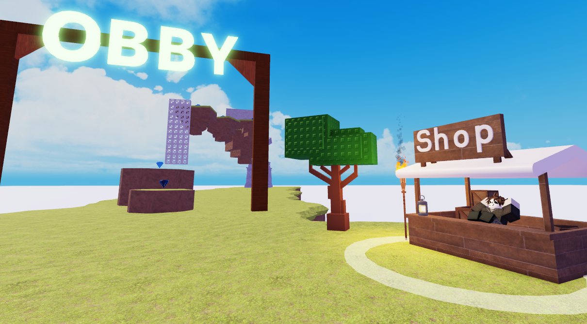
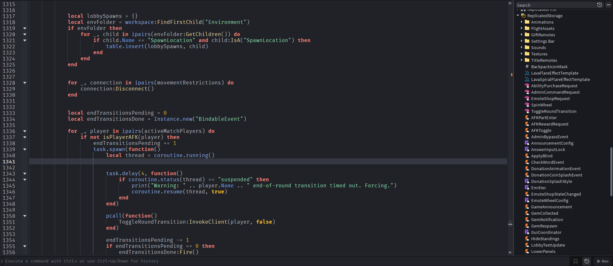
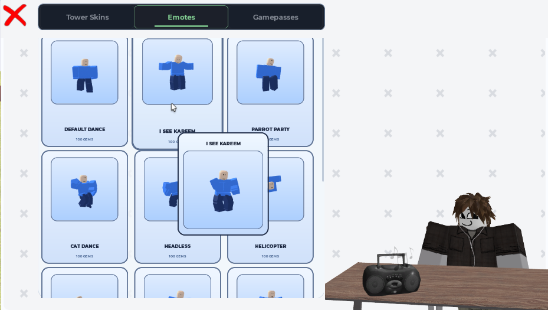

Word It!
A word-driven survival game where every answer is a way up. Match the round’s prefix or suffix, submit a valid word, and build your platform above the rising water.
01 / The worldPlay begins
Play begins
before the round.
The bright lobby gives players room to explore an obby and visit the shop between matches. It sets a playful tone before Word It! shifts into its fast-paced word-and-water challenge.

02 / The systemsWords drive
Words drive
the game.
Luau systems coordinate round transitions, check submitted words, and track standings. Each valid answer lifts a player’s platform, turning a vocabulary challenge into a race against rising water.

03 / The personalityMore than
More than
survival.
The emote shop adds a social layer to the game. Players can browse animations and use gems earned from valid words to make their time between rounds feel like their own.
